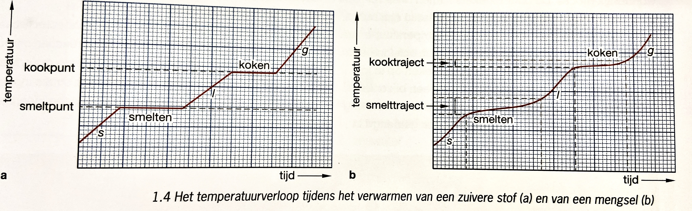

Je kunt beschrijven wat biologie is en uitleggen op welke gebieden de biologie een rol speelt.
Je kunt de levenscyclus van dieren beschrijven.
Je kunt de organisatieniveaus van de biologie benoemen en uitleggen dat op elk hoger organisatieniveau emergente eigenschappen ontstaan.

Zuivere stoffen
Als een stof bestaat uit één soort molecuul, dan is het een zuivere stof. Als de bouwstoffen van een zuivere stof uit één soort atomen bestaan, dan is de stof een element, als het uit meerdere soorten atomen bestaat, is het een verbinding.
Mengsels
Mengsels zijn stoffen die uit meerdere soorten moleculen bestaan. Een zuivere stof heeft een smelt- en kookpunt. Een mengsel heeft een smelt- en kooktraject.
Soorten mengsels
een oplossing is een helder mengsel die tot op microniveau is gemengd (cola, water)
een suspensie is een troebel mengsel van een vaste stof in een vloeistof waarbij de vaste stof niet is opgelost (zand in water, chocomel)
een emulsie is een troebel mengsel van twee stoffen die niet mengen (olie en water), dit komt door het verschil in dichtheid en er ontstaat een tweelagen-systeem, met een emulgator kun je voorkomen dat de emulsie ontmengt
hydrofiele stoffen mengen goed met water en hydrofobe stoffen niet of slecht